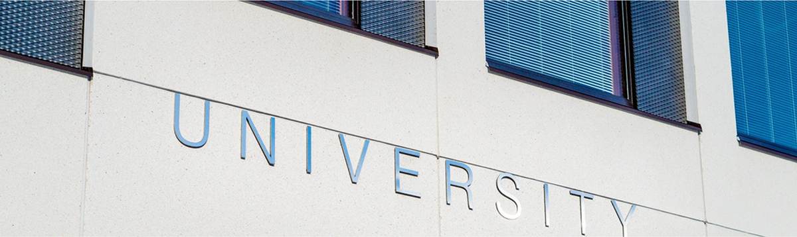

桥德科技离岸众创空间依托桥德科技集团的优势资源，桥德科技集团是一家集自动化设备和环保设备研发与制造，科技成果转移转化，创业投资等为一体的集团公司，桥德科技集团旗下：联合自动化集团有限公司（德国）、库特勒自动化系统有限公司（德国）、Seilnacht烘焙自动化有限公司（德国）、库特勒环保科技（苏州）有限公司、桥德科技成果转移转化（苏州）有限公司、桥德科技创投基金服务（苏州）有限公司（筹）。公司按照双平台模式发展，分别在德国和中国成立两个离岸基地，相互联动，人才技术互通。
中德跨境合作中心位于德国巴登符腾堡州斯图KSL-Kuttler Automation Systems GmbH Zeiss-Strasse 1 D 78083 Dauchingen ，总建筑面积4500㎡（独栋三层）。基础配置：配套人工智能、工业自动化展厅、公共研发区域、会议区、路演厅、联合办公区域等。主要任务：提供基础服务、技术支持、法律援助、订制研发、投融资服务等，帮助德国本土企业，对接对接中国技术需求企业和中国消费市场。桥德科技集团在位于德国的巴登符腾堡州库特勒总部设立中德跨境合作中心、自动化研发中心等离岸创新基地。中心 积极与当地科技企业，科学家，学者，科技协会等个人和社会组织建立深度沟通合作，目前已经与德国斯图加特大学签订战略合作协议，和德国弗劳恩霍夫研究院基本达成合作意向。
桥德科技集团资源充分对接德国前沿科技，引进相关前沿技术和高端人才，并配套并购和孵化种子基金，针对中国企业转型升级的需求，充分对接德国前沿科技，辅助德国技术人才落地，帮助中国科技企业进行技术升级改造。

桥德离岸众创不仅与国内各大高校合作，更利用桥德在德优势，与德国各大高校合作。 签约服务机构：苏州万隆财税、国浩律师事务所、敏慧财税、通途知识产权等一批国内优质第三方服务机构。